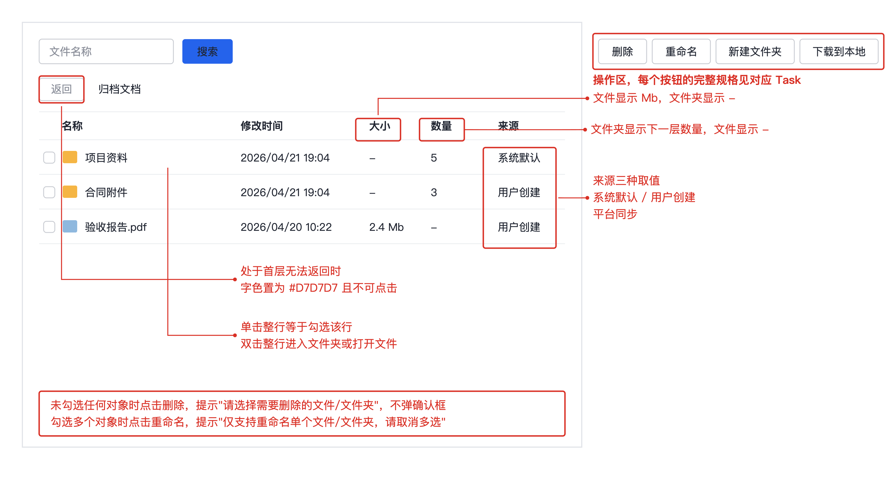

产品定义
是什么
一个面向独立开发者的订阅管理工具，把分散在邮箱、账单和各家后台的订阅集中到一处。
目标用户
同时维护三个以上付费订阅的独立开发者与小团队负责人。
核心问题
订阅散落在各家平台，续费日期、金额和用途需要逐个后台查，经常出现忘记取消导致的重复扣款。
价值
一处看全部订阅，续费前主动提醒，取消路径直达。
产品原则
- 只做记录与提醒，不代管支付凭证
- 数据本地优先，云端同步是可选项
- 任何提醒都要给出可执行的下一步
Product 1.0
背景
当前用表格手工维护订阅清单，续费日期靠记忆，过去半年出现两次重复扣款。
目标用户与核心问题
这一版只服务单人使用场景，解决"续费前不知情"这一个问题，不处理团队协作与费用分摊。
这一版的目标
上线三个月内，用户能在一处看到全部订阅，并在续费前七天收到提醒。
Non-goals
- 不做自动取消订阅
- 不做多人协作与权限
- 不接入支付渠道
核心用户流程
用户导入或手工录入订阅，系统按续费周期计算下次扣款日，到期前推送提醒，用户点击提醒直达该服务的取消页面。
主要功能与行为
- REQ-1.0-001 支持手工录入订阅，必填字段为服务名称、金额、币种、续费周期、下次续费日
- REQ-1.0-002 支持从邮箱账单解析订阅信息，解析失败时降级为手工录入，不阻断流程
- REQ-1.0-003 续费日前七天推送提醒，提醒内容包含金额与取消入口
- REQ-1.0-004 订阅列表按下次续费日升序排列，已取消的订阅移入归档区不参与排序
- REQ-1.0-005 已失效：原计划支持按标签分组，改为 2.0 的 REQ-2.0-002
成功标准 / Release Criteria
- 用户能在三分钟内完成首次录入并看到完整列表
- 提醒送达率不低于百分之九十五
- 续费日计算在跨月与闰年场景下结果正确
未解决问题
- 邮箱解析的准确率需要真实样本验证，目前只在十封测试邮件上跑通
- 多币种订阅是否需要统一折算展示，取决于首批用户的实际构成
附录
字段定义
| 字段 | 类型 | 必填 | 说明 |
|---|---|---|---|
| serviceName | String | 是 | 服务名称，展示用，不做唯一性约束 |
| amount | Decimal | 是 | 单次扣款金额，保留两位小数 |
| currency | String | 是 | 币种代码，遵循 ISO 4217 |
| cycle | Enum | 是 | 续费周期，取值为月度、季度、年度 |
| nextChargeDate | Date | 是 | 下次续费日，由周期与上次扣款日推算 |
| status | Enum | 是 | 订阅状态，取值为生效、已取消、已过期 |
续费日计算规则
跨月场景需要特别处理：上次扣款日为 31 号而下月只有 30 天时，续费日取当月最后一天，不顺延到下月 1 号。
const nextChargeDate = (lastCharge, cycle) => {
const next = new Date(lastCharge);
const targetDay = next.getDate();
next.setMonth(next.getMonth() + CYCLE_MONTHS[cycle]);
if (next.getDate() !== targetDay) {
next.setDate(0);
}
return next;
};
行内代码示例：状态字段用 status 而不是 state，与数据库字段保持一致。
状态流转
- 新建订阅后状态为生效
- 用户主动取消后状态变为已取消，保留历史记录
- 续费失败连续三次后状态变为已过期，不再推送提醒
参考
- 币种代码标准：ISO 4217
- 提醒推送的时区处理遵循用户设备本地时区
任务
需求说做什么，任务说怎么做。每个任务带界面图与完整交互规格，开发照着实现不需要回头问。
Task-001：文件列表的删除操作
关联需求：REQ-1.0-003
任务内容
在文件列表操作区提供删除入口，支持多选批量删除，删除前需要确认。
界面

图注：操作区在列表右上角，删除与重命名、新建文件夹、下载到本地同一组。生成日期 2026-09-21。
交互规格
| 字段 | 内容 |
|---|---|
| 触发 | 点击操作区"删除"按钮 |
| 前置条件 | 列表中已勾选至少一个文件或文件夹 |
| 正常路径 | 弹确认框显示"确认删除选中的 {count} 项？" → 用户确认 → 执行删除 → 刷新列表 → 顶部提示"已删除 {count} 项" |
| 边界情况 | 未勾选任何对象时提示"请选择需要删除的文件/文件夹"，不弹确认框；勾选的文件夹非空时确认框追加一行"其中 {folderCount} 个文件夹包含子内容，将一并删除" |
| 错误处理 | 网络失败提示"删除失败，请重试"，列表保持原状不刷新；无权限提示"没有删除权限：{name}"，整批不执行 |
| 兜底行为 | 部分成功时提示"成功 {successCount} 项，失败 {failCount} 项"并列出失败项名称与原因，成功项保留删除结果不回滚 |
| 显示规则 | 删除执行中按钮置灰并显示加载态，防止重复点击；操作完成后勾选状态清空 |
验收
- 勾选单个文件删除后，列表不再显示该文件
- 未勾选时点击删除只出现提示，不出现确认框
- 勾选包含子内容的文件夹时，确认框显示子内容提示行
- 网络断开时删除失败，列表内容与删除前一致
Task-002：返回上一层
关联需求：REQ-1.0-004
任务内容
在列表上方提供返回按钮，点击回到上一层目录。
交互规格
| 字段 | 内容 |
|---|---|
| 触发 | 点击"返回"按钮 |
| 前置条件 | 当前不处于首层 |
| 正常路径 | 加载上一层目录 → 列表刷新 → 面包屑去掉最后一级 |
| 边界情况 | 处于首层时按钮字色置为 #D7D7D7 且不可点击，点击无任何反应也不提示 |
| 错误处理 | 上一层目录加载失败时提示"目录加载失败，请重试"，停留在当前层 |
| 兜底行为 | 上一层目录已被他人删除时，直接跳回首层并提示"原目录已不存在，已返回根目录" |
| 显示规则 | 返回过程中列表显示加载态，不显示空列表 |
验收
- 首层时返回按钮为灰色且点击无反应
- 非首层时点击返回，列表内容与面包屑同步回退一级